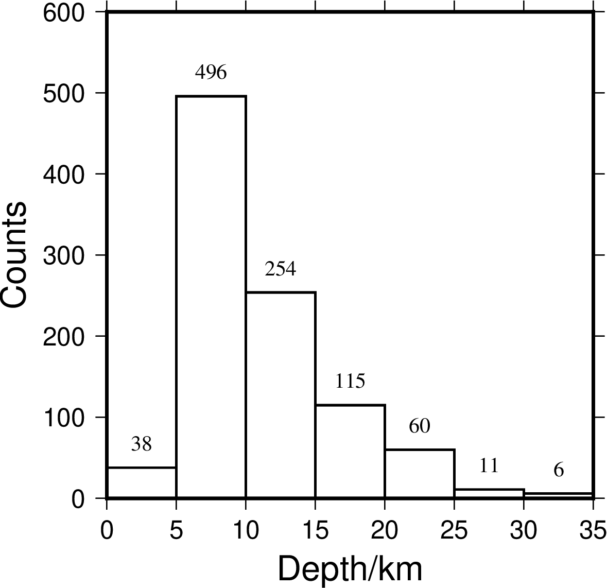
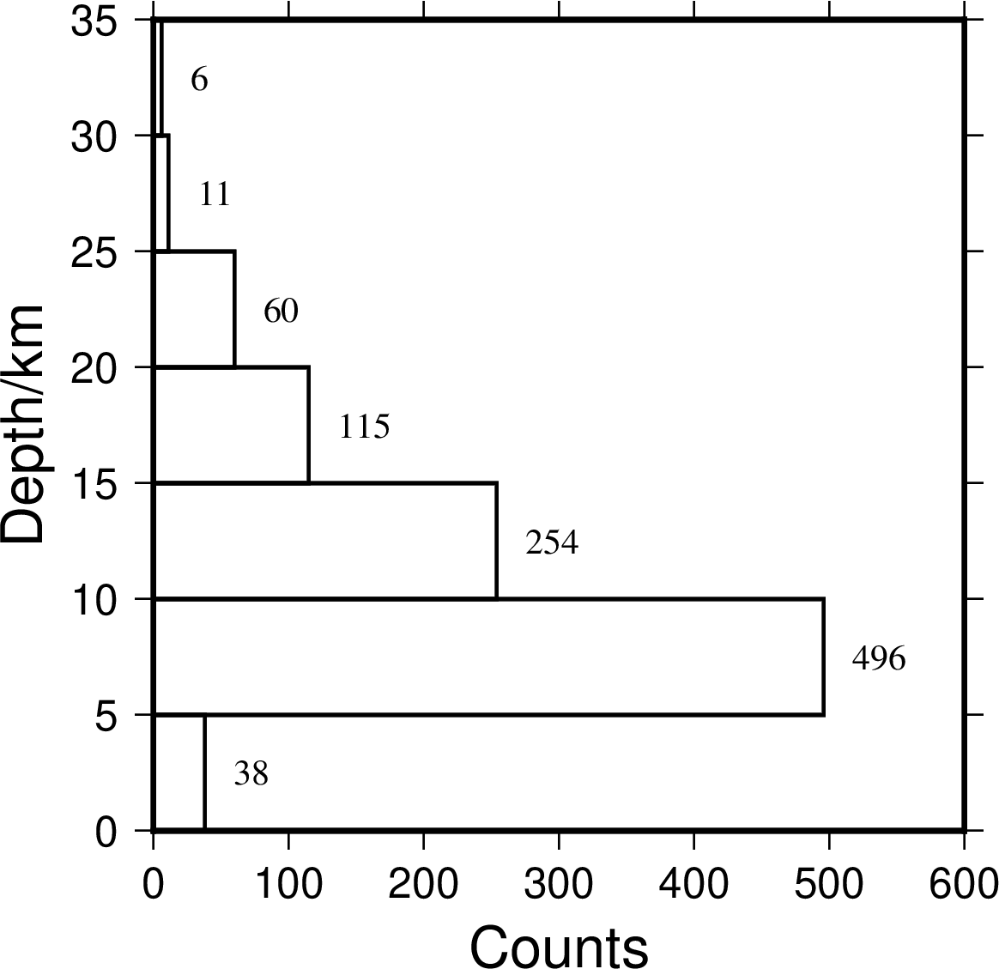
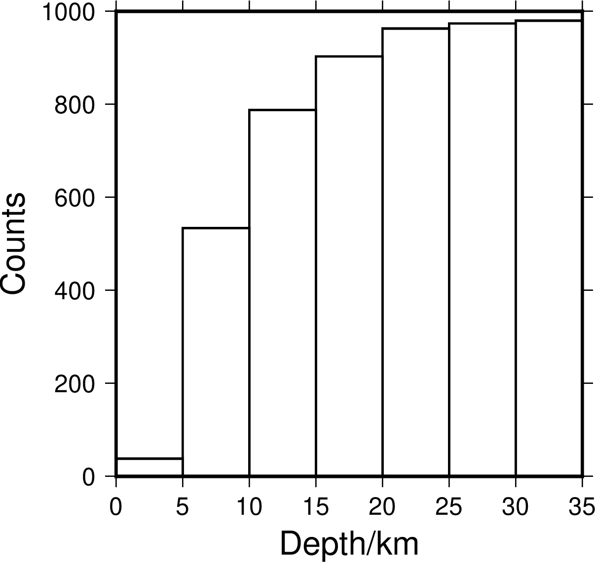
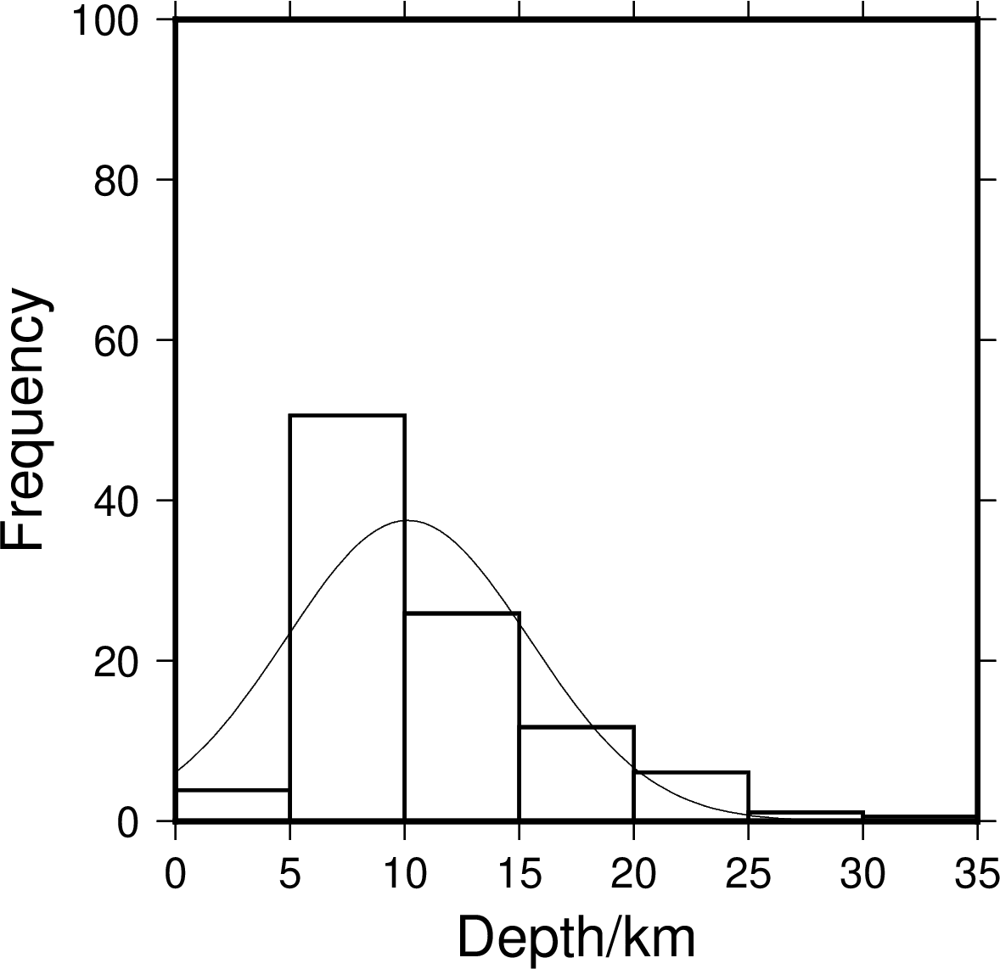

绘制直方图¶
histogram 模块可以用于统计并绘制直方图。
该模块可以绘制不同类型的直方图，具体选项为：
-Z-Z0为默认情况下的缺省值，绘制统计直方图，-Z1绘制百分比直方图-Q绘制累积直方图-A绘制水平直方图，默认情况绘制垂直直方图
以下示例使用的数据为 eq.dat。数据格式为三列，分别为：地震纬度、地震经度、震源深度。
垂直直方图¶
gmt histogram eq.dat -R0/35/0/600 -JX8c -Bxa5+l"Depth/km" -Bya100+l"Counts" -BWSne -D+f10p,4+o8p -W5+b -L1p -i2 -png histVert

垂直直方图
此示例中：
-R0/35/0/600设置了X轴范围是0到35，Y轴范围为0到600-JX8c指定了整张图为线性投影，图的宽度（X轴长度）和图的高度（Y轴长度）均为8厘米-Bxa5+l"Depth/km" -Bya100+l"Counts"分别设置了X、Y轴标注、刻度的间隔、标签-D+f10p,Times-Roman+o8p为每个bar设置标注，标注字号为10p、字体为4号Times-Roman，标注与bar之间距离为8p-W5+b设置直方图bin宽度为5，+b表示将落在范围外的数据包含在第一个或最后一个bin中-L1p设置bar边框为1p-i2从输入文件eq.dat中读取第3列，-i0表示输入文件第1列
水平直方图¶
-A 用于控制绘制水平直方图，上一个例子中默认绘制垂直直方图。
gmt histogram eq.dat -R0/35/0/600 -JX8c -Bxa5+l"Depth/km" -Bya100+l"Counts" -BWSne -D+f10p,4+o8p -A -W5+b -L1p -i2 -png histHori

水平直方图
累积直方图¶
-Q 表示绘制累积直方图。
gmt histogram eq.dat -R0/35/0/1000 -JX8c -Bxa5+l"Depth/km" -Bya200+l"Counts" -BWSne -W5+b -L1p -i2 -Q -png histCumu

累积直方图
百分比直方图¶
-Z1 设置纵轴为百分比，-N 绘制等效的正态分布曲线。
gmt histogram eq.dat -R0/35/0/100 -JX8c/8c -Bxa5+l"Depth/km" -Bya20+l"Frequency" -BWSne -W5+b -L1p -i2 -N -Z1 -png histFreq

百分比直方图